| 日付 | 2013年12月7日（土） |
|---|---|
| 山域 | 西上州 |
| メンバー | 家族（妻、長女・2歳、長男・0歳） |
| 山行形態 | 子連れ日帰り |
| アクセス | 車 |
| ルート (Map) | 第一駐車場 (10:07) - (10:36) 桜山 - 周辺散策 - (11:58) 桜山 (12:23) - (12:50) 第一駐車場 |
昨年、桜山に冬桜を見に出かけたが、
外れ年だったようで、ほとんど開花していなかった。
今年は、昨年よりも咲いているという情報を得たので
昨年のリベンジを果たすため、今年も桜山に向かう。
桜山公園の駐車場に到着。関越のダンプ横転による事故渋滞で到着がだいぶ遅くなってしまった。
それでも駐車場の車の数は去年より少ないくらいだ。
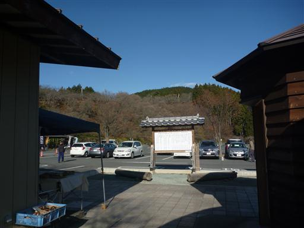
人通りの少ない公園を歩いていく。
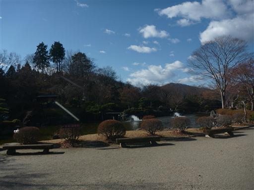
冬桜のある場所までやって来たが、今年もほとんど桜は咲いてない。
どうやら来る時期が遅すぎたようだ。一応明日までライトアップはされるのだが…
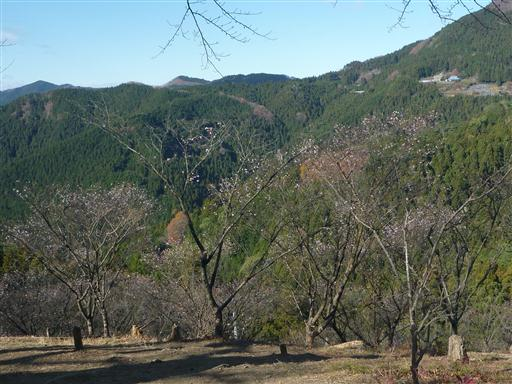
救いは昨年と違って天気が良いこと。青空の下、御荷鉾山がよく見えている。
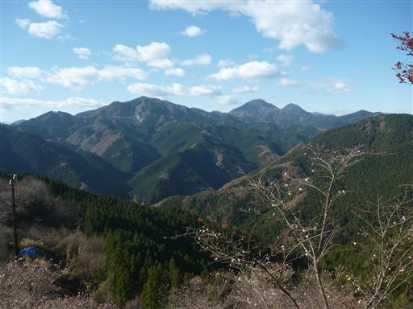
この辺りが一番桜が美しい場所だ。昨年と同じくらいか、少し少ないくらいか…
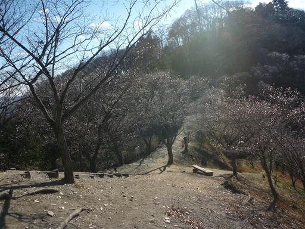
桜山の山頂めざして階段を登っていく。
昨年はおんぶだったが、今年は娘は頑張って歩いている。1年の成長だ。
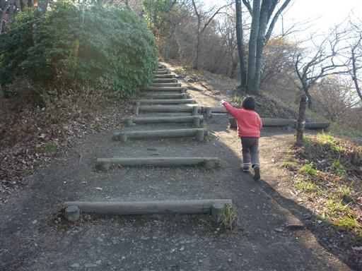
桜山の山頂に到着。標高591m。
静かで人通りは少ない。
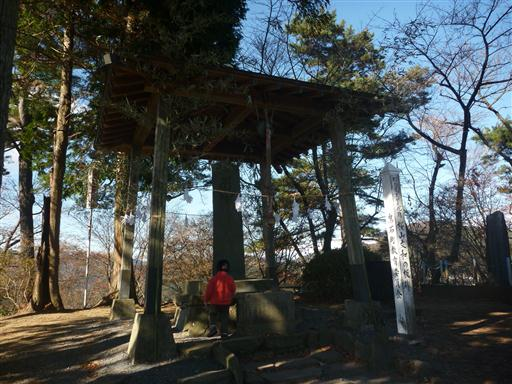
山頂からは素晴らしい展望が広がる。
昨年は山頂で雪が降り出してすぐに撤退したが、今日はゆっくり景色が眺められる。
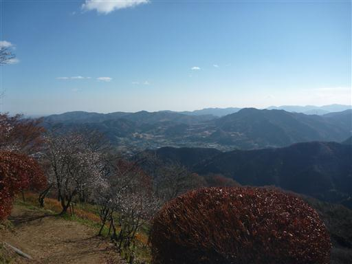
見事な花付きの木が立っている。
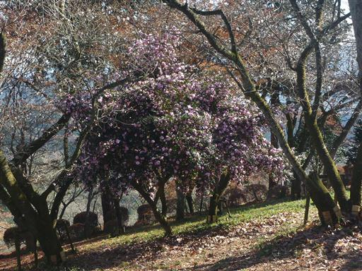
こちらの花も美しい。
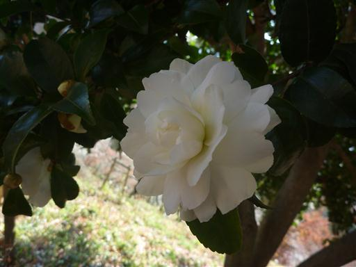
こちらは金魚椿。葉が金魚の形になっている。
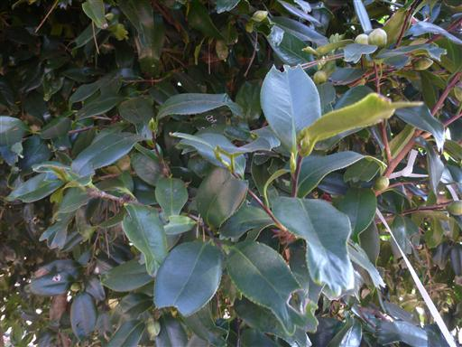
昼食にはまだ早すぎるので、辺りを少し散策することにする。
この辺りは遊歩道が網の目のように整備されている。
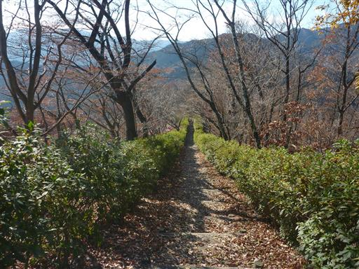
長い階段を延々と下る。
軽く散策するつもりだったが、道は結構下るのでその分登らないといけない。
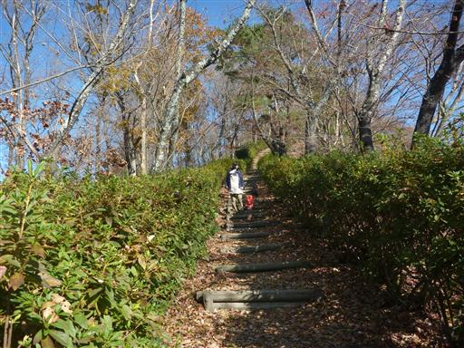
冬桜と遠くには黄緑色の木が見える。
この景色だけを見ているとまるで春のようだ。
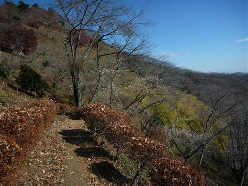
再び山頂付近まで戻ってきたら、ベンチに腰かけて昼食にする。
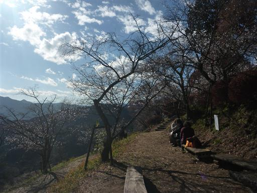
桜を眺めながら持参したおにぎりを食べる。数は少ないが美しい桜の花が咲いている。

茶色に染まった木。あまり美しくない紅葉だと思いながら近づいてみると…
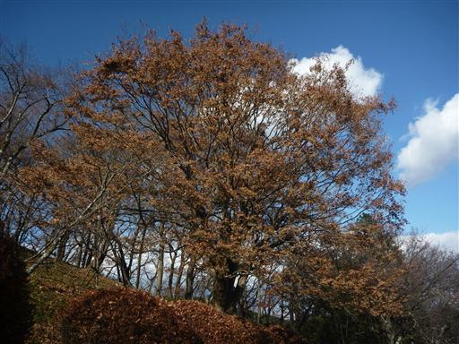
茶色く見えていたのは全て種だった。ものすごい数だ。
カエデの木だろうか？
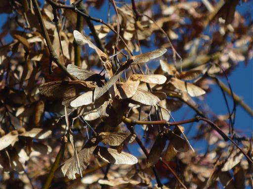
帰り道に、黄緑色に見えていた木を近くで見学する。
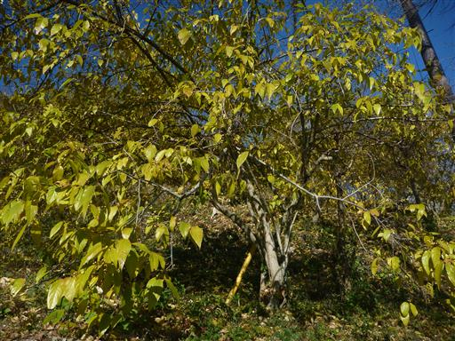
この木は蝋梅のようだ。小さな蕾があちらこちらにできている。
これから葉を落として黄色の花を咲かせるのだろう。
桜の花の数は少なく昨年のリベンジは果たせなかったが、青空の元のんびり散策を行うことができた。